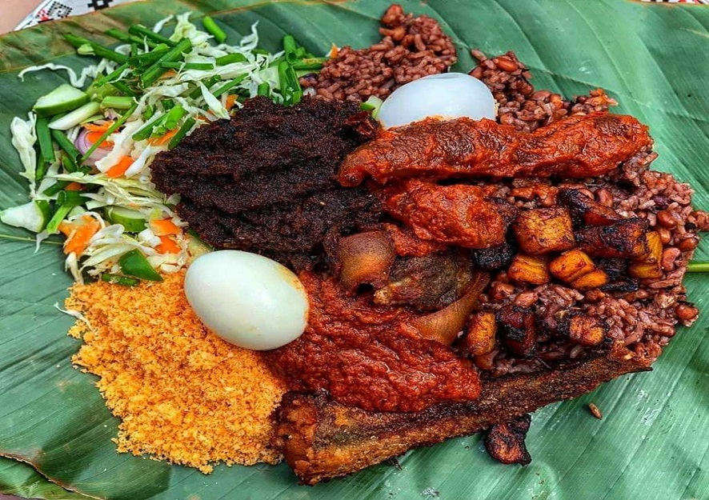

Waakye

Description
Waakye is arguably the most popular street food in Ghana. It can be eaten as breakfast or lunch. It is a combination of red or black-eyed beans and rice, and it’s often served with salads, spaghetti, fried plantains, gari, meat, and fish. The eating of rice and beans together is actually a common phenomenon in many cultures in the Americas, India, and other West African countries.
Ingredients
- beans
- sorghum leaves
- salt
- water
- jasmine rice
- baking soda (optional)
- coconut oil (optional)
Steps
- Wash the sorghum leaves thoroughly.
- Put the sorghum leaves in a pan and add hot water. Allow it to soak for at least 4 hours. You can add a bit of baking soda to intensify the color.
- Wash the beans thoroughly and soak it for about 45 to 60 minutes.
- Transfer the beans into a pot and cover it with enough water. Cook until tender or well done.
- Wash the jasmine rice and add it to the cooked beans. Add the sorghum liquid. Add salt and coconut oil and stir.
- Cover it with a patchment paper and a lid and leave until it is done.
- Serve with waakye stew, shito, and sides.
Sides